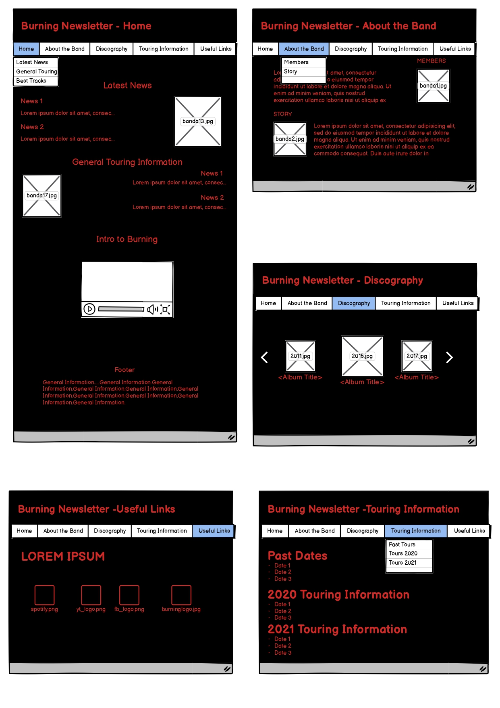
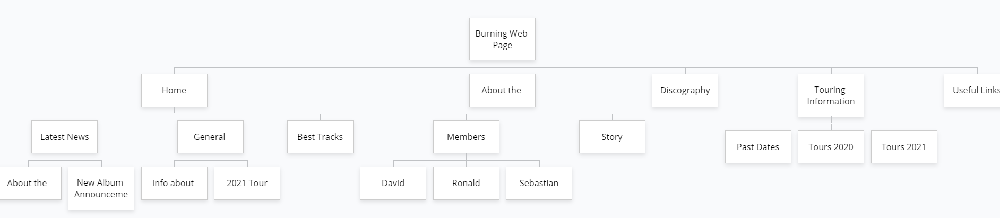
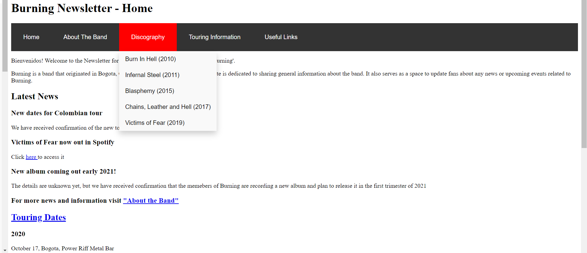
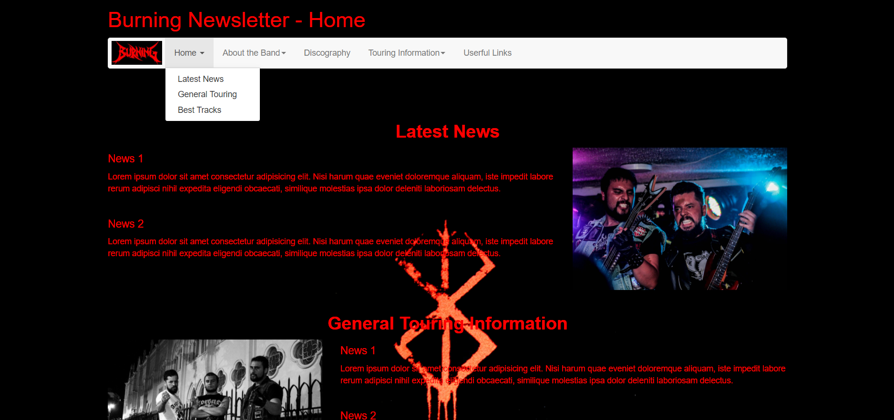
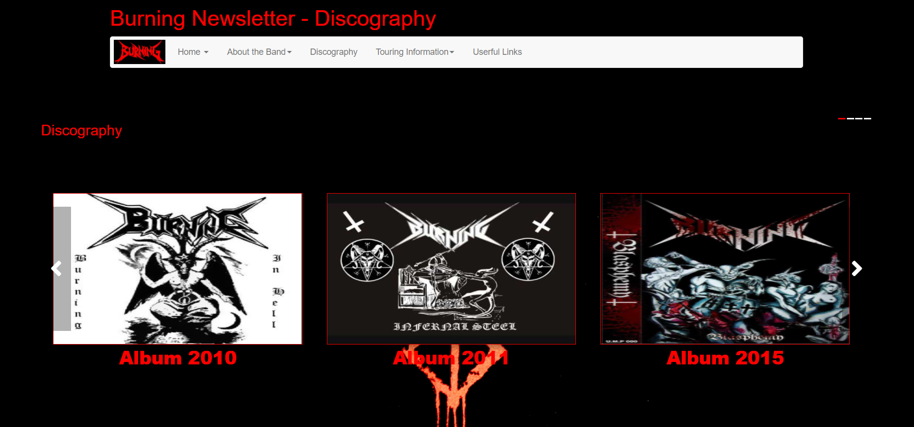
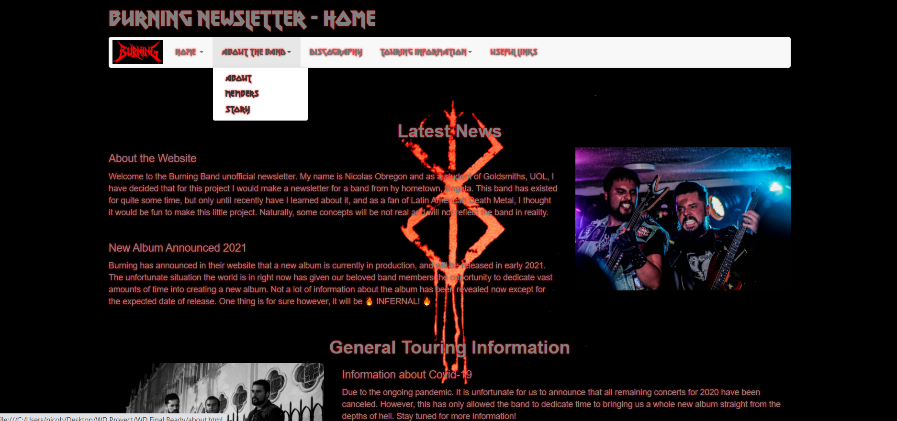

-Introduction-
As a fan of heavy metal, I chose to do a newsletter for a Thrash Death Metal band I know of. I was attracted to this idea because they are from my hometown and I am good friends with the guitarist. I was also very attracted to the technicalities of making a webpage that relied heavily on dark colors, and I wanted to explore the different things I could do with this. I began to choose a structure basing myself off of websites from other metal bands, this included Metallica’s website [1], Slayer [2] and Motorhead [3]. 
-Research and Inspiration-
The styles from both the Metallica and Motorhead websites were clearly too overwhelming. They had too much information jump straight into the users face as soon as they logged in the site, and they had constant deals and sales going on. The Slayer website was slightly less overwhelming but still shared some mistakes in it, having too many colors in the same page. Seeing this, I decided to research other websites. I easily found multiple fan-made newsletters for different metal genres. The first one I studied was Death Metal Underground[4]. This website seemed more simpler than the other ones, but in a manner that was good as the information was spread out well and was not overwhelming. It was nicely organized and informational.  
The second website I researched was Kerrang [5], a newsletter for Thrash Metal. Kerrang was also better made than the official band websites I initially researched. It had a simpler color palette, which made it more harmonious and easier to surf through. However, it shifted slightly to the right on my laptop, which as I scrolled down more and more, seemed more apparent, and caused me to unfocus on what I was reading. I therefore decided that my website needed to have images and text that was completely harmonious with the rest of the website, it could not have one image or one title too much to the left or right. 
The last website I researched was a Taylor Swift anclb [6]. I believed I could gather something useful from going the opposite way. It was fairly simple in the way it was presented, and had no more than 4 or 5 colors that compliment each other. I especially liked this, as it was easy to stay focused on the website and read the material. It also made me realize the importance of pictures, as this website had too few. I therefore decided to experiment with pictures in my own website to see when it was too much or too little.

-Accessibility-
When I was done with the main idea of the website, it was time to start adding accessibility features. I began by using the “sr-only” element with the navigation bar to provide information about the website to people who use screen readers. I also used several methods with the “aria” attribute. These included “aria-expanded” which can tell users if the navbar is collapsed or expanded. The “aria-controls” explains that the navbar is interactive with the user. “Aria-haspopup” indicates to the user that there is a pop up menu. All of these methods I researched from the following website [7].  I also included an “alt” method in all of the pictures supplied in the webpage.
Lastly, in the CSS stylesheet I included webkit, moz, and o methods in order to ensure that almost anyone could see the webpage as it would work in Safari, Firefox, and Opera, respectively. 

-Usability-
Following the newsletters I researched, I decided to go with a “simple-is-more” approach. I did not want my webpage to have multiple unnecessary events happening at the same time. As a web user, it is easy to become overwhelmed from information if a website is not well ordered. There are some websites where massive amounts of information can be good, like a british newspaper for example. It needs to have a bit of everything, economics, politics, crime, news about specific zones, as it can therefore help the user navigate it and find what they want. For a newsletter about a Colombian band however, I believe the opposite is more valuable. This is the reason that I chose to do my project the way it is, having each one of the five pages focusing on exactly what they say they focus and nothing more. 
I am very happy with the end-result of the website, and I believe I have achieved a good ratio of text and images. The reader will not find paragraphs and paragraphs of text or a massive wall of images when they enter the website. Instead, the colors all match correctly, and the text usually has some visual accompanying it. I have included in the Home (index) page a youtube link that I believe serves as a good introduction to the band. It doesn't autoplay, nor does it pop up in the reader's face, it is just there for the reader themselves to choose if they want to listen or not.
The discography section of my webpage includes some JavaScript code which I used to create a carousel of images. It is highly useful, as it first shows the user with the first three albums of the band, and then they can scroll right to see the other 2. It is once again subtle information that is available for the user to do whatever they want with it. As some of the albums cannot be found online, by clicking on the image of each album the user will be redirected to a website with some general information about the albums. I also included some code that allows the images to become bigger once the user hovers over them, making it clear to know what the user is looking at. I used the same method in the fifth page, Useful Links. In this case, I borrowed ideas from many of Apple's products, as they have no information about them, except for an icon. Three of the icons are easily recognized, and the last one is a link to the bands official website.

-Discoveries-
I had some problems with many parts of the project. Most of them I solved using w3schools in terms of CSS and HTML and it took vast amounts of trial and error. An example is the youtube video I embedded. I also learned how to use bootstrap, as making the whole website look harmonious with itself was something I believe can be very complex using just HTML and CSS. I used the following tutorial for bootstrap [8].
The carousel was extremely difficult to code, but I used both w3schools [9] and a youtube video [10] as a general base, and then just did trial and error until it worked. I have discovered that when it comes to coding, starting is always the hardest part. As I developed the site, I changed things almost daily until in the end I ended up with the result I wanted to.

-Good Things-
Generally speaking, the site is very easy to follow, has exactly the information that is expected and that is necessary, and has a good amount of text and pictures. The carousel took me a long time to refine, it was very shady at first, but the more I worked on it the better it looked.

-Improvements- 
If I would have had more time, I would have focused on implementing more news about the band on the web page. Because of COVID-19, the band has in reality not been doing much of anything, therefore some of the information is purely speculative. They are also a band with a low online profile, making it difficult to find much of their music.
One thing I would have thought would have been amazing to add would have been a dropdown menu in the Discography page. Every time the user clicks on an album, a huge dropdown menu appears, listing the tracks of the record, with a play button that allows the user to see them all. Unfortunately, due to time constraints and lack of knowledge I was unable to do this, but would like to in the future. Also, as said previously, I could not find a lot of their tracks on the internet, so it wasn't possible in the first place.

-Appendices-
[1].  Metallica.com. (n.d.). Retrieved September 16, 2020, from https://www.metallica.com/
[2]. Repentless: The Official Slayer SiteNews. (n.d.). Retrieved September 16, 2020, from https://www.slayer.net/news
[3]. The Official Motörhead Website. (2020, July 28). Retrieved September 16, 2020, from https://imotorhead.com/
[4]. Death Metal News. (n.d.). Retrieved September 16, 2020, from http://www.deathmetal.org/news/
[5].  Thrash Metal. (n.d.). Retrieved September 16, 2020, from https://www.kerrang.com/tags?tag=thrash-metal
[6]. FanBuff Taylor Swift Fan Club. (n.d.). Retrieved September 16, 2020, from https://www.fanbuff.com/taylorswift
[7]. Damera, S. (2018, June 22). Aria-haspopup(property): Accessibility blog. Retrieved September 16, 2020, from http://www.sumandamera.com/aria-haspopup-property/
[8]. Bootstrap Tutorial. (n.d.). Retrieved September 16, 2020, from https://www.tutorialrepublic.com/twitter-bootstrap-tutorial/
[9]. How TO - Slideshow. (n.d.). Retrieved September 16, 2020, from https://www.w3schools.com/howto/howto_js_slideshow.asp
[10]. Powell, K. (Director). (2019, January 3). How to code a carousel with HTML, CSS and JavaScript - from scratch (part 2) [Video file]. Retrieved September 16, 2020, from https://www.youtube.com/watch?v=gBzsE0oieio


-Wireframe and Site Map-
Can be found under the folder "wireframe-sitemap"








